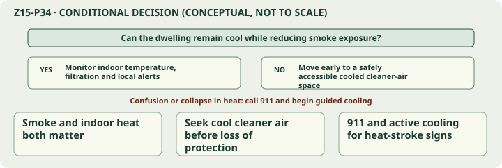

Z15-P34 · Disaster scenarios · New manuscript
Resolve compound smoke-plus-extreme-heat emergencies safely
Prevent fatal indoor heat stroke when a wildfire smoke plume overlaps an extreme summer heat wave in homes lacking air conditioning.
When it applies · Un-air-conditioned homes or power-outage residences facing simultaneous High AQI smoke AND Excessive Heat Warnings.
Equipment · Indoor thermometer, live AirNow AQI + NWS Heat alerts, portable AC/HEPA awareness, and public air-conditioned clean-air shelter list.

Actions
- Recognize the compound hazard trap: sealing windows tightly against smoke inside a home WITHOUT air conditioning causes indoor heat to climb to life-threatening heat-stroke levels within hours—acute heat stroke kills much faster than brief moderate smoke exposure.[D07, D09]
- If your home lacks air conditioning (or power fails) during simultaneous smoke and extreme heat, relocate proactively to a public air-conditioned clean-air cooling center, library, mall, or cooled relative's home—taking vulnerable elders, infants, and asthmatics early.[D07, D09, D14]
- If using a window or portable air conditioner during smoke, verify it is set to RECIRCULATE indoor air (avoid single-hose portable AC units or evaporative swamp coolers that pull smokey outdoor air directly inside unless paired with HEPA filtration, and watch indoor thermometer continuously).[D07, D09]
Failure recognition · Keeping every window sealed tight in a 98°F third-floor un-air-conditioned apartment to block smoke haze while an elderly resident develops fatal heat stroke.[D07, D09]
Verify · Confirm indoor temperature monitored alongside AQI, AC recirculate mode verified, and air-conditioned shelter relocation triggered early if indoor heat spikes.[D07, D09]
Stop or change course · Dangerous indoor heat buildup overrides window-sealing rules—relocate immediately to an air-conditioned clean-air space or summon 911 for heat-illness symptoms.[D07, D09, T09]
Evidence and editorial notes
- D07 · US EPA · Create a Clean Room to Protect Indoor Air Quality During a Wildfire (current web edition)
- Section: Create a Clean Room > Indoor Filtration and Recirculation Setup · Conditions: Households sheltering indoors during multi-day wildfire smoke events
Support: Designate an interior room with few doors/windows, run a properly sized portable HEPA air cleaner (avoiding ozone generators) or set HVAC to recirculate with a MERV-13 filter if system-compatible, and avoid indoor combustion (candles, gas stoves, vacuuming without HEPA) that adds particulates.
Limitations: During simultaneous extreme heat and smoke, cooling takes priority if indoor temperatures become dangerous—relocate to a public clean-air cooling center. · Conflicting evidence: None; addresses compound smoke-plus-heat emergencies.
Editorial note: Core indoor clean-room assembly and compound-hazard card evidence. · Specialist reviewer: Indoor air quality and public health
Primary source · checked 2026-11-24 - D09 · FEMA / Ready.gov · Extreme Heat (current web edition)
- Section: Extreme Heat Waves, Heat Domes, and Power-Outage Cooling Plans · Conditions: Prolonged heat advisories, excessive heat warnings, and grid-strain brownouts
Support: Identify public cooling centers and air-conditioned backup locations ahead of heat waves, check twice daily on older adults/children/chronically ill neighbors, block solar gain through windows, never leave people or pets in parked vehicles, and activate 911 immediately for heat stroke.
Limitations: Electric fans alone do not prevent heat illness when indoor air temperatures climb into extreme heat ranges (above ~95°F) with high humidity. · Conflicting evidence: None; aligns with CDC-HEAT, E08, E19, and T09.
Editorial note: Anchors urban/rural heat-wave resilience and vulnerable-neighbor checks. · Specialist reviewer: Public health and emergency medicine
Primary source · checked 2026-11-24 - D14 · FEMA / Ready.gov · Evacuation (current web edition)
- Section: Household Evacuation Logistics, Go-Bags, and Shelter Registration · Conditions: Mandatory or voluntary evacuations across multi-hazard disasters
Support: Pre-pack grab-and-go kits (medications, IDs, water, warm layers, chargers, pet gear), maintain at least two independent route options out of the neighborhood, notify out-of-area contacts upon departure, and register status through official shelter/Red Cross Safe & Well channels.
Limitations: GPS navigation apps can route evacuees onto flooded, smoke-blocked, or closed secondary roads; follow live law-enforcement and DOT closures. · Conflicting evidence: None; operationalizes T13 into household evacuation execution.
Editorial note: Core evacuation execution and accountability evidence in Z15. · Specialist reviewer: Emergency management and transportation safety
Primary source · checked 2026-11-24 - T09 · CDC NIOSH · Heat-related Illnesses (current web edition)
- Section: Heat stroke > Symptoms and First aid · Conditions: Suspected heat stroke after exertion or heat exposure
Support: Confusion, slurred speech or loss of consciousness can indicate heat stroke. Call 911 and cool the person promptly.
Limitations: Exertional heat stroke can occur even in moderate ambient temperatures during heavy effort. · Conflicting evidence: None; aligns with T05.
Editorial note: Triggers immediate emergency call and cooling stop condition. · Specialist reviewer: Emergency and wilderness medicine
Primary source · checked 2026-11-24
Source lineage · US EPA Clean Room and Ready.gov Heat; new manuscript · Classification · New manuscript.